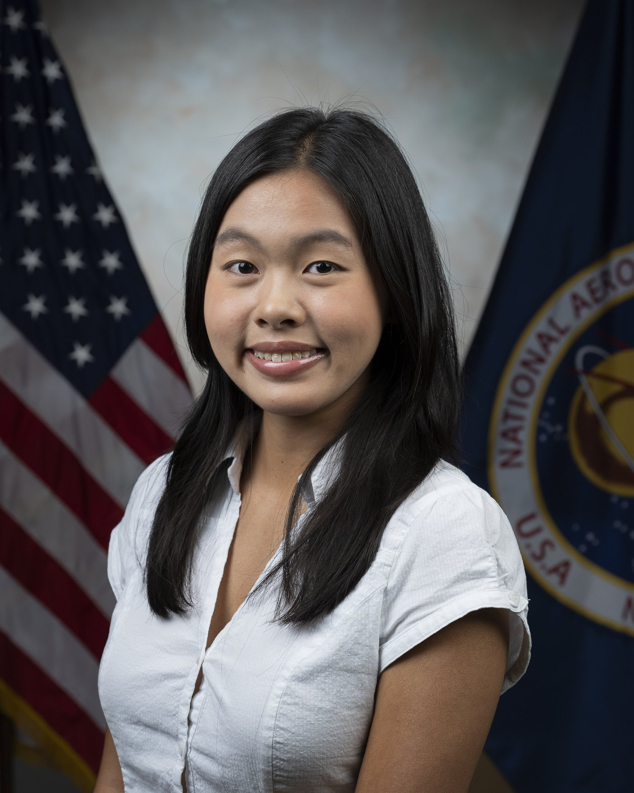
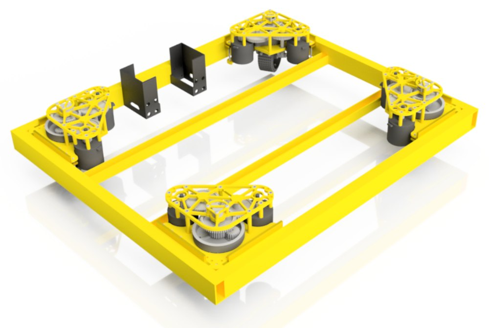
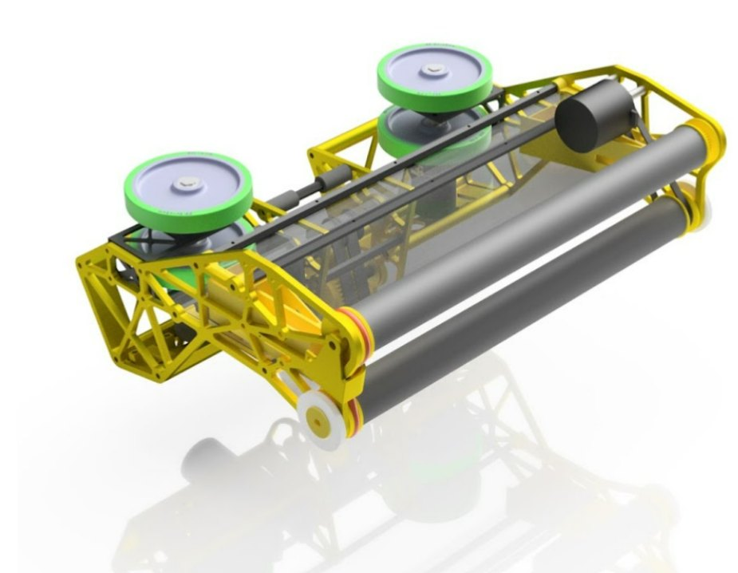
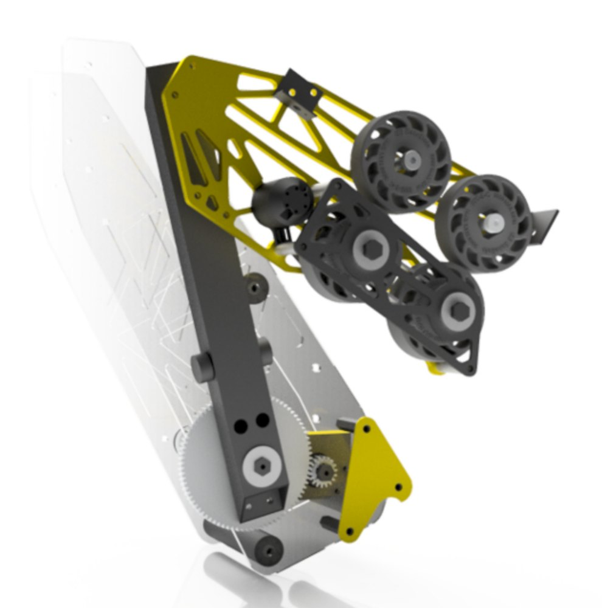

HackRice Organizing Team
- Organize workshops, welcome activities, and competition logistics for worldwide teams at Rice hackathons.

Hi! I’m Sophia, a sophomore at Rice University majoring in Computer Science and minoring in Data Science. I’ve been programming since my sophomore year of high school and am comfortable working with Python, including pandas and NumPy, as well as Java and PostgreSQL. I also have experience working with Arduino and soldering circuit boards.
Currently, I’m a Computer Engineering Intern at NASA Armstrong Flight Research Center, where I create test cases and test a radar application. I’m also developing a search microservice using Elasticsearch to implement semantic search.
During the school year, I’m part of Professor Treangen’s computational genomics lab, Genome Sleuths. There, I worked on using a machine learning Variational Autoencoder (VAE) model to identify potential primers for Polymerase Chain Reaction (PCR).
Outside of school and work, I love spending time with my two cats, baking, rock climbing, and playing badminton.
Download resumeMajor: Computer Science
Minor: Data Science
GPA: 3.92/4.0
Relevant coursework: Algorithmic Thinking, Data Science Tools & Models (PostgreSQL, NumPy/Pandas/SKLearn, Spark), Computational Thinking (Python), Statistics for Data Science (R), Prompt Engineering, Economics, Multivariable Calculus, Linear Algebra
GPA: 4.0/4.0 (Unweighted)
Click on any project to learn more
Built for HackRice 2025. Applied OpenCV and MediaPipe (ML) for medical landmark measurement for Electronic Health Records. Our hackathon submission included a full-stack FastAPI imaging backend (Ngrok localhost), React frontend on Vercel and Firebase authentication/storage.
Developed new coilgun design (2023-24) with Arduinos, gyro sensors, H-bridge and electromagnets to improve coilgun efficiency. Won 2024 regional and 4th in EE at state.



If you want to contact me, fill out the following form and I will do my best to get back to you as soon as I can!